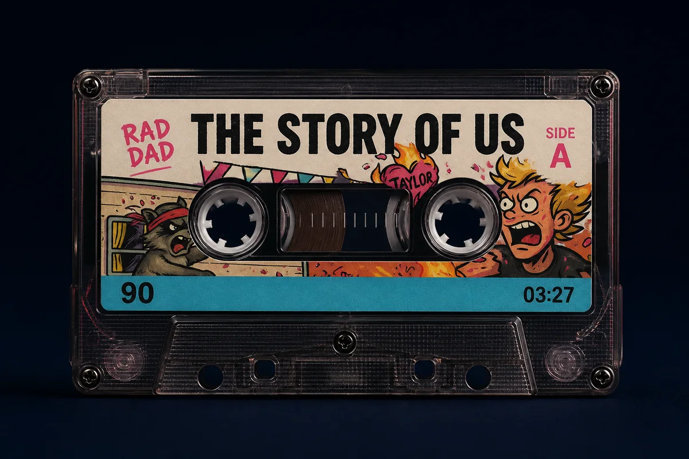

Taylor Swift cover
The Story Of Us
A Taylor Swift song, turned up. Listen to Jeff Story’s cover recording, released under his name. Jeff sings and plays guitar in Rad Dad.
Preview loads from Apple Music only when you choose. The streaming links below work without it.